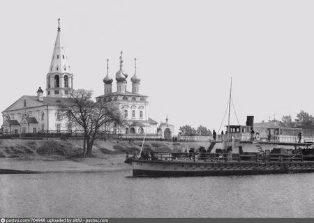
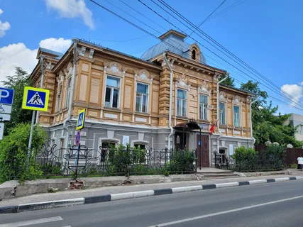
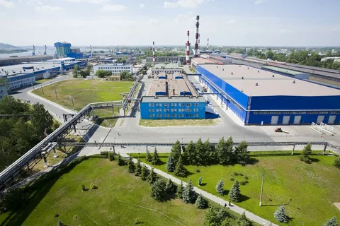
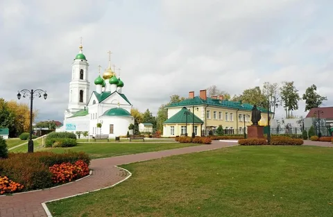
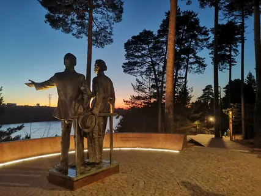

Основание • 1358 год
Впервые поселение на месте современного города упоминается в исторических документах XIV века — в 1358 году. Тогда оно было известно как слободка при Нижегородском Благовещенском монастыре.
Прародинами Бора считаются слободки Везломская, Копытовская и Никольская. В XIV веке слободка Никольско-Боровская преобразована в крупное село Бор.

Исторические этапы
Индустриализация
Запуск Борского стекольного завода создал рабочие места, изменил демографию и превратил посёлок в промышленный центр всесоюзного значения.
Городской статус
Официальное признание Бора городом дало старт градостроительству: капитальное жилье, школы, больницы.
Оборонный комплекс
Освоены сложнейшие технологии: триплекс для авиации, бронестекло. Вклад в Победу отмечен званием «Город трудовой доблести».
🚢 Судоремонт и машиностроение
Завод «Нижегородский Теплоход» укрепил связи с речным флотом, способствовал развитию прибрежных территорий.
🌉 1965 — Мост через Волгу
Открытие первого постоянного автодорожного моста, соединившего Бор с Нижним Новгородом.
🚠 2012 — Канатная дорога
Пассажирская канатная дорога через Волгу — важный транспорт и популярный туристический аттракцион.
Достопримечательности



